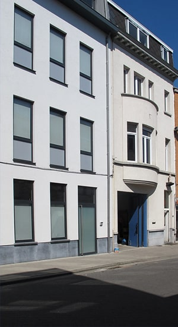
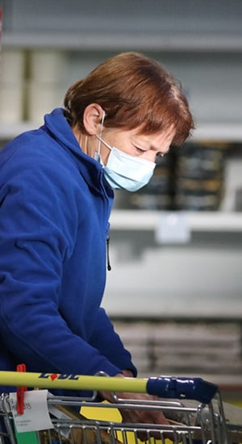
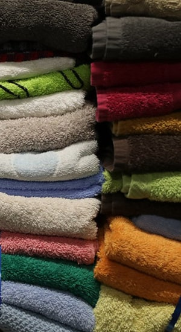
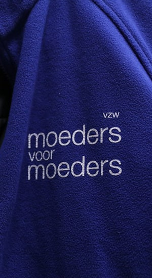

MvM
Depuis 1992, VZW Moeders voor Moeders s'engage auprès des plus pauvres de Flandre. Plus de 160 bénévoles distribuent du matériel et de la nourriture aux familles avec de jeunes enfants qui ont des difficultés financières. Chaque semaine, notre organisation à but non lucratif distribue des colis alimentaires à des centaines de familles. En plus de la nourriture, les mères peuvent obtenir toutes sortes d'assistance matérielle pour leurs enfants, comme des vêtements pour enfants, du matériel de soins, du matériel pour bébé, etc. L'asbl propose également divers services, comme le resto-bébé, où le petit on peut prendre un bain et un repas chaud deux fois par semaine.



